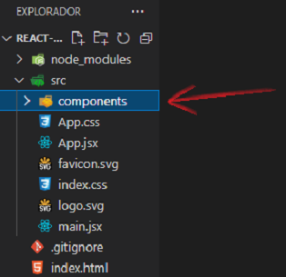
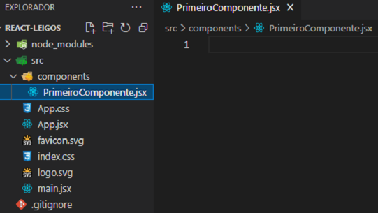
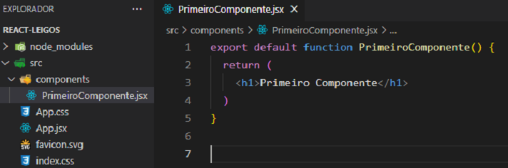
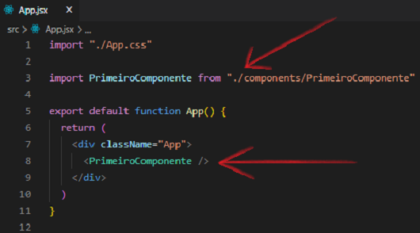
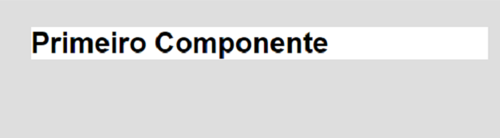
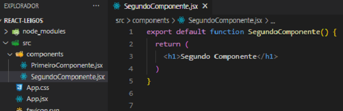
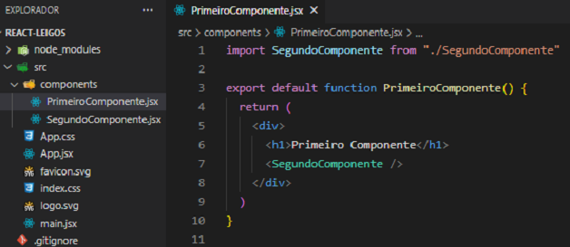
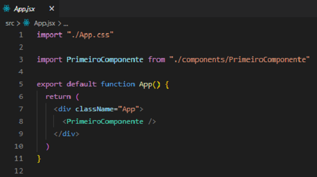

Quando nós falamos em React, um dos principais e mais poderosos conceitos da biblioteca está na criação de componentes.
O componente é como se fosse um bloco que tem uma determinada função e aparência.
Geralmente os componentes ficam dentro de uma pasta chamada components e são criadas dentro da pasta src.

Dentro da pasta components criamos o nosso primeiro componente chamado PrimeiroComponente.jsx.

A escrita de um componente nada mais é que uma função e se assemelha ao App.jsx. O export default no inicio é necessário para podermos importar e usar dentro do App.jsx ou de outros componentes. Podemos usar componentes dentro de outros componentes. Note que dentro de return não usamos a div, pois temos apenas um elemento pai. Caso tivessemos dois ou mais elementos deveriamos colocar todos dentro de uma div, pois dentro do return é obrigatório o uso de apenas um elemento pai (tag html).

Para usarmos o componente criado devemos importá-lo dentro do App.jsx. E para usarmos de fato escreveremos como se fosse uma tag html.
<PrimeiroComponente />

No navegador teremos a seguinte aparência:

Também é possível usar um componente dentro de outro componente. Para exemplificar criaremos outro componente.

Com o SegundoComponente criado, iremos importá-lo dentro do PrimeiroComponente. Usamos SegundoComponente como uma tag html logo abaixo do h1. Note que dentro do return podemos ter apenas um elemento pai (tag html), então fizemos uso da tag div.

Perceba que não alteramos nada dentro do arquivo App.jsx.

Agora veja a tela no navegador: